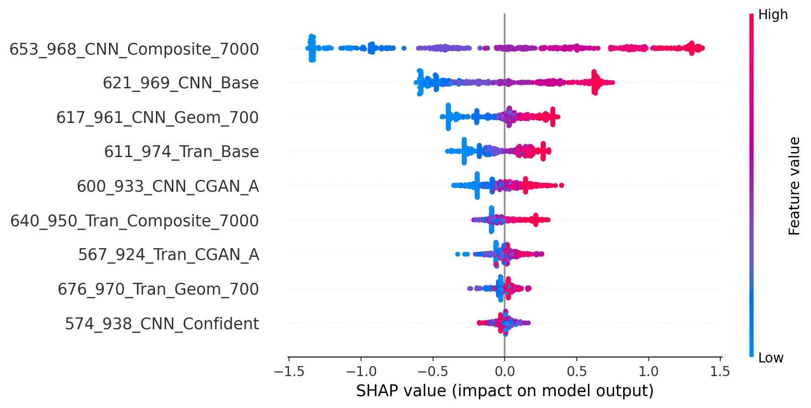
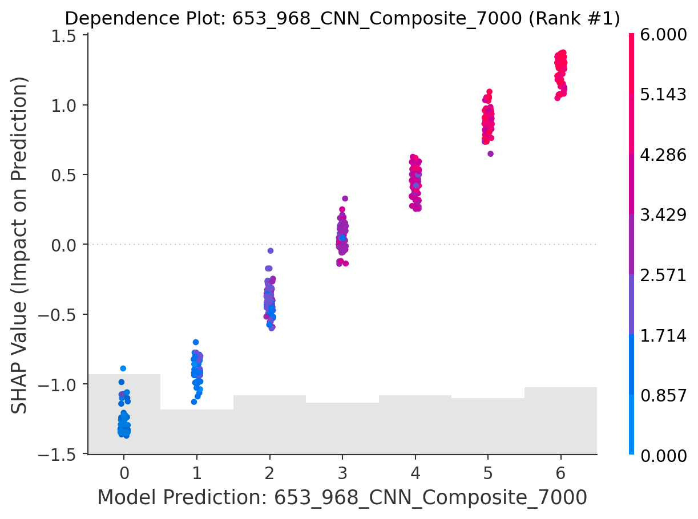
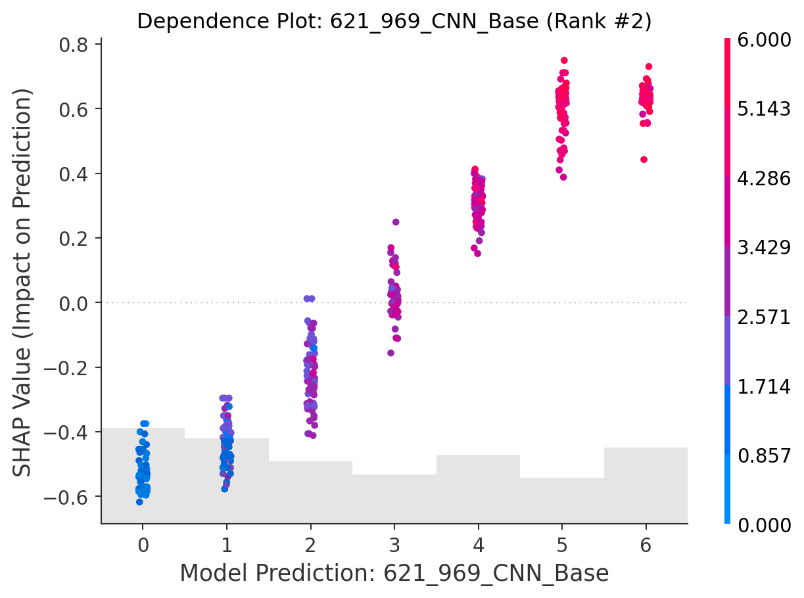
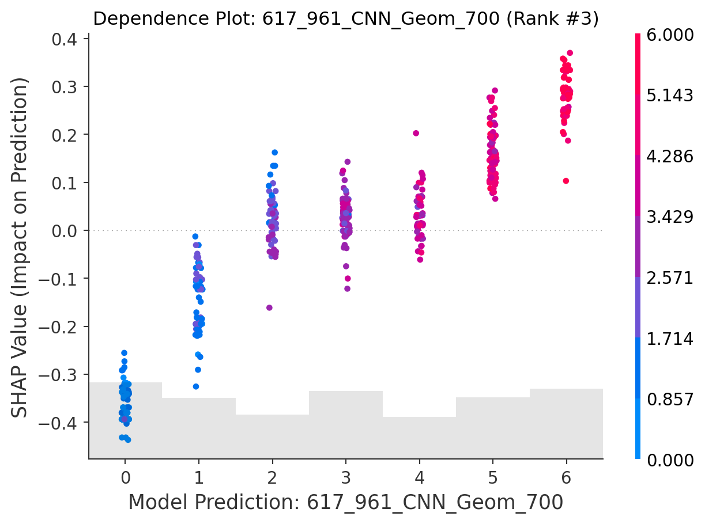
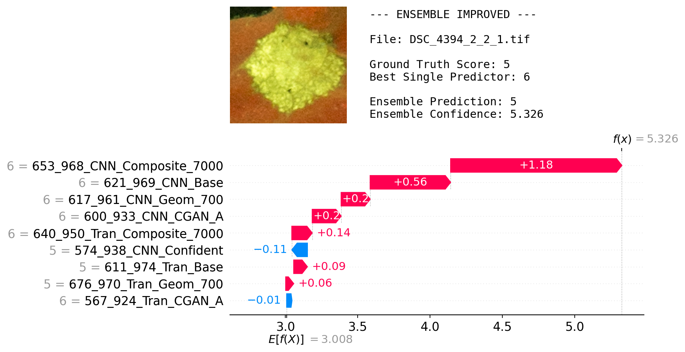
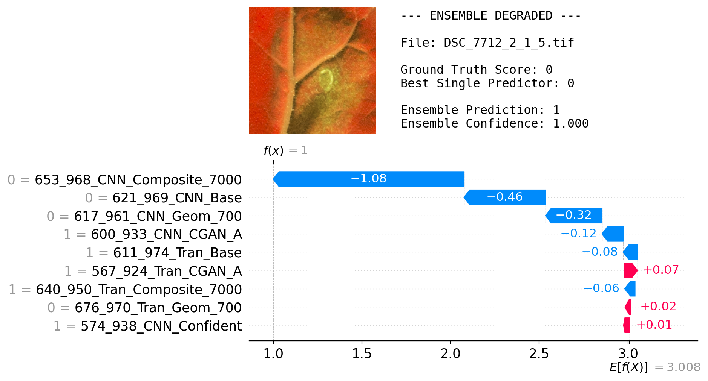
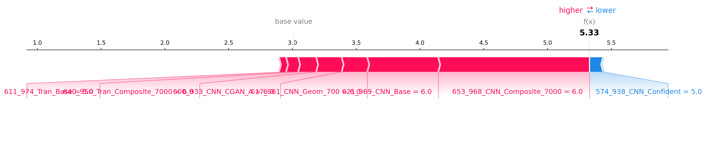
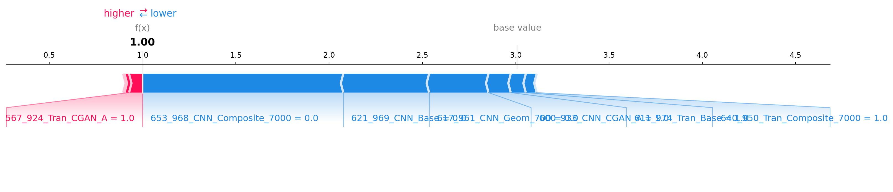

Does a Random Forest ensemble of the 9 best-performing deep learning models improve upon the top-performing single model?
\(H_0\): The Random Forest ensemble will not have higher accuracy than the top-performing individual model.
Rationale: If the individual models share highly correlated error patterns, the ensemble may fail to provide additive value and could introduce noise, resulting in performance parity or degradation.
\(H_1\): The Random Forest ensemble will have higher accuracy than the top-performing individual model.
Rationale: If the models make mistakes on different images (have independent error patterns), the ensemble can learn to favour the correct expert in a given instance, giving improved overall performance.
Within the ensemble, are some models more important for predicting high-severity cell death and others more important for predicting low-severity cell death?
\(H_0\): Individual model importance is consistent across all levels of cell death severity.
Rationale: Models may be generalists that perform equally well or poorly across the entire 0-6 scale, meaning the ensemble relies on them to the same degree regardless of the cell death severity.
\(H_1\): Models will display varying levels of importance depending on the severity of the score.
Rationale: Deep learning architectures may have different sensitivities to different features. Some may be optimised for the subtler textures of early-stage cell death, whilst others may better capture the high-contrast, large-scale cell death in severe cases.
Are model importances within the ensemble globally uniform? Are there some images for which the globally most important models have near-zero importance?
\(H_0\): Model importance is globally uniform, and the models ranked as most influential across the dataset are the primary drivers for every image.
Rationale: The Random Forest may determine that a few models are consistently the most reliable, leading it to apply a uniform weighting strategy where the top models dominate every prediction.
\(H_1\): Model importance is not globally uniform - models that are highly ranked across the dataset may have near-zero importance for specific images.
Rationale: The ensemble may use different models as local experts for specific pohenotypes. A model may be the most influential on average, but may contribute nothing to certain cases.
Experimental Plan
Data preparation and Random Forest Training
Load ranked_model_predictions.csv and balance the class sizes by downsampling.
Train a RandomForestRegressor using the 9 models as features and the ground truth as the target. Use bootstrapping to ensure each tree in the forest sees a slightly different subset of the images.
Question 1:
Calculate accuracy and near-miss accuracy for each of the individual models on the class-balanced training dataset, identifying the best individual model.
Compare the accuracy and near-miss accuracy of the ensemble.
Visualise a confusion matrix of ensemble vs best individual model.
Calculate the percentage of images where the ensemble and best individual model disagreed.
Question 2:
Implement SHAP on the trained Random Forest, using the interventional approach with a background set of roughly 100 (class-balanced) images to isolate the unique contribution of each model.
Visualise a SHAP beeswarm plot. For example, if a specific model has a long tail of red dots (high scores) on the far right, but its blue dots (low scores) are all grouped at zero, it is a high-severity specialist.
Visualise a SHAP dependence plot for the top 3 models. Look for non-linear jumps in SHAP values. For example, if Model A’s impact is 0 until it predicts a 4, then jumps to +1.5, then it is only influential in high-severity detection.
Calcululate the mean absolute MSHAP values separately for images with Ground Truth 0-1 vs 5-6 to see if the model ranking reshuffles.
Question 3:
Visualise waterfall for images that have improved (gone from near-miss to exact) or degraded (gone from exact to near-miss) between the best individual model and the ensemble.
Visualise force plots to find instances where the model with the highest global importance has a low SHAP value but a globally lower-ranked model provides the primary push for that image.
/Users/jowillia/miniforge3/envs/tensorflow_env/lib/python3.11/site-packages/tqdm/auto.py:21: TqdmWarning:
IProgress not found. Please update jupyter and ipywidgets. See https://ipywidgets.readthedocs.io/en/stable/user_install.html
Total Image Count in Class-balanced Dataset: 3052
Image Count per class: 436
Train Random Forest model with bootstrapping
Choosing \(n_estimators\) here is different from just training for accuracy. Previously, I trained models with \(n_estimators\) varying from 2 to 200, and found the best performing model had 24 estimators, after which the accuracy plateaud.
--- Disagreement Analysis (N=611) ---
Improved: 58 images (9.5%) - Ensemble corrected best model error.
Degraded: 67 images (11.0%) - Model interference/bias introduced.
Static: 486 images (79.5%) - Outcome remained unchanged.
Question 2: Within the ensemble, are some models more important for predicting high-severity cell death and others more important for predicting low-severity cell death?
Implement SHAP
# Create a class-balanced background set (14 samples per class for ~98 total)background_data = pd.concat([ resample( X_train[y_train == cls], replace=False, n_samples=14, random_state=42 ) for cls in np.sort(y_train.unique())])# Initialize TreeExplainer with interventional approach# This isolates the unique contribution of each modelexplainer = shap.TreeExplainer(rf_model, data=background_data, feature_perturbation="interventional")# Calculate SHAP values for the test setshap_values = explainer.shap_values(X_test)# Create the modern Explanation object for robust plotting# base_values is the average prediction of the background dataset (~3.0)shap_explanation = shap.Explanation( values=shap_values, base_values=explainer.expected_value, data=X_test.values, feature_names=model_cols)
Visualise Beeswarm plot
# Generate the Beeswarm Plot using the Explanation object# This visualizes the global importance and the direction of impactshap.plots.beeswarm(shap_explanation, max_display=len(model_cols))plt.show()

The Beeswarm plot shows that CNN_Composite_7000 is the most influential for both low (blue) and high (red) scores.
By contrast, CNN_Confident does not have a large influence on the ensemble’s predictions, and its effects tend to be in the opposite direction of the final ensemble prediction (red and blue flipped).
The distribution of points for all models seem to be balanced on either side of the expected value (3), suggesting they are equally influential in low and high score predictions.
Dependence Plots for Top 3 Models
# Identify the top 3 models by mean absolute SHAP valuemean_abs_shap = np.abs(shap_values).mean(axis=0)top_3_indices = np.argsort(mean_abs_shap)[-3:][::-1]top_3_model_names = [model_cols[i] for i in top_3_indices]print(f"Top 3 Models by Global Importance: {top_3_model_names}")# Generate Dependence (Scatter) plots for the top 3 modelsfor i, idx inenumerate(top_3_indices): plt.figure(figsize=(10, 6)) shap.plots.scatter( shap_explanation[:, idx], color=y_test.values, show=False ) plt.title(f"Dependence Plot: {model_cols[idx]} (Rank #{i+1})") plt.ylabel("SHAP Value (Impact on Prediction)") plt.xlabel(f"Model Prediction: {model_cols[idx]}") plt.show()
Top 3 Models by Global Importance: ['653_968_CNN_Composite_7000', '621_969_CNN_Base', '617_961_CNN_Geom_700']
<Figure size 960x576 with 0 Axes>

<Figure size 960x576 with 0 Axes>

<Figure size 960x576 with 0 Axes>

Interpreting:
For CNN_Composite_7000, the SHAP Value is linearly related to the score. By contrast, for CNN_Geom_700, the SHAP values are larger nearer the extreme values, and the model is less influential in intermediate scores.
The grey bars are the data density - some models predicted some scores more than others.
Mean SHAP (MSHAP) changes for low and high severity
# MSHAP for Low Severity (Ground Truth 0-1)low_severity_mask = y_test.isin([0, 1]).valuesmshap_low = np.abs(shap_values[low_severity_mask]).mean(axis=0)# MSHAP for High Severity (Ground Truth 5-6)high_severity_mask = y_test.isin([5, 6]).valuesmshap_high = np.abs(shap_values[high_severity_mask]).mean(axis=0)# Construct Comparison DataFramemshap_df = pd.DataFrame({'Model': model_cols,'MSHAP_Low_Severity': mshap_low,'MSHAP_High_Severity': mshap_high})# Add a column to show the rank changemshap_df['Rank_Low'] = mshap_df['MSHAP_Low_Severity'].rank(ascending=False).astype(int)mshap_df['Rank_High'] = mshap_df['MSHAP_High_Severity'].rank(ascending=False).astype(int)mshap_df['Rank_Shift'] = mshap_df['Rank_Low'] - mshap_df['Rank_High']print("--- Model Importance Re-ranking by Severity ---")print(mshap_df.sort_values(by='MSHAP_High_Severity', ascending=False))
Question 3: Are model importances within the ensemble globally uniform? Are there some images for which the globally most important models have near-zero importance?
Waterfall Plots of Improved and Degraded
def display_explanation_with_image(idx, pos, title_prefix):# Data Retrieval score =int(df[target_col].loc[idx]) img_name = df['img_name'].loc[idx] img_path =f"/Users/jowillia/Documents/GitHub/AutoCDAScorer_Models/data/cropped_images/{score}/{img_name}" raw_ensemble_pred = raw_preds[pos] rounded_ensemble_pred = rounded_preds[pos] best_model_val = X_test[best_model_name].iloc[pos] fig = plt.figure(figsize=(18, 14))# Outer grid: Top row for visual data, bottom row for SHAP outer_gs = gridspec.GridSpec(2, 1, height_ratios=[1, 1.4], hspace=0.2)# Inner grid: width_ratios=[1, 2] ensures the text box starts sooner# wspace=0.01 pulls the text box tight against the image box inner_gs = gridspec.GridSpecFromSubplotSpec(1, 2, subplot_spec=outer_gs[0], width_ratios=[1, 2], wspace=0.01)# 1. Image (Upper Left) ax_img = fig.add_subplot(inner_gs[0]) img = Image.open(img_path) ax_img.imshow(img) ax_img.set_anchor('W') ax_img.axis('off')# 2. Text (Upper Right - now sits closer to the image) ax_txt = fig.add_subplot(inner_gs[1]) ax_txt.axis('off') title_text = (f"--- {title_prefix} ---\n\n"f"File: {img_name}\n\n"f"Ground Truth Score: {score}\n"f"Best Single Predictor: {int(best_model_val)}\n\n"f"Ensemble Prediction: {rounded_ensemble_pred}\n"f"Ensemble Confidence: {raw_ensemble_pred:.3f}" )# x=0 places the text at the left edge of the second subplot ax_txt.text(0, 0.5, title_text, fontsize=12, verticalalignment='center', family='monospace')# 3. Waterfall Plot (Bottom Row) ax_shap = fig.add_subplot(outer_gs[1]) shap.plots.waterfall(shap.Explanation( values=shap_values[pos], base_values=explainer.expected_value, data=X_test.iloc[pos], feature_names=model_cols ), show=False) plt.show()
# Use the masks generated in Question 1 to find indicesimproved_indices = np.where(improved_mask)[0]degraded_indices = np.where(degraded_mask)[0]# Select the first available instance for eachpos_improved = improved_indices[0]pos_degraded = degraded_indices[0]# Retrieve original dataframe index for metadata/image pathsidx_improved = X_test.index[pos_improved]idx_degraded = X_test.index[pos_degraded]# Display the Waterfall visualizationsdisplay_explanation_with_image(idx_improved, pos_improved, "ENSEMBLE IMPROVED")display_explanation_with_image(idx_degraded, pos_degraded, "ENSEMBLE DEGRADED")


Force plots (showing same information)
def display_force_plot(pos, title):print(f"\n--- {title} ---")# matplotlib=True is required for inline rendering in notebooks shap.plots.force( explainer.expected_value, shap_values[pos], X_test.iloc[pos], feature_names=model_cols, matplotlib=True )# Visualise force plots for the same improved and degraded examplesdisplay_force_plot(pos_improved, "Force Plot: Ensemble Improved Instance")display_force_plot(pos_degraded, "Force Plot: Ensemble Degraded Instance")
--- Force Plot: Ensemble Improved Instance ---

--- Force Plot: Ensemble Degraded Instance ---

Local Experts (Images where globally most important models have low SHAP values, and less important models have large SHAP values)
# Get the Global Top Model indexglobal_lead_idx = np.argsort(np.abs(shap_values).mean(axis=0))[-1]# Find instances where Global Lead has low impact (near zero) but a lower-ranked model has high impact (e.g., > 0.5)local_expert_indices = []for i inrange(len(shap_values)): local_val_lead = np.abs(shap_values[i, global_lead_idx]) other_vals = np.abs(shap_values[i, :])# Logic: Global lead is in bottom 3 of local impact, # and some other model has a high impactif local_val_lead <0.05and np.max(other_vals) >0.39: local_expert_indices.append(i)# Visualise the first discoveryif local_expert_indices: pos_h3 = local_expert_indices[0] idx_h3 = X_test.index[pos_h3] display_explanation_with_image(idx_h3, pos_h3, "H3 Evidence: Local Expert Override")else:print("No clear override instances found with these thresholds.")